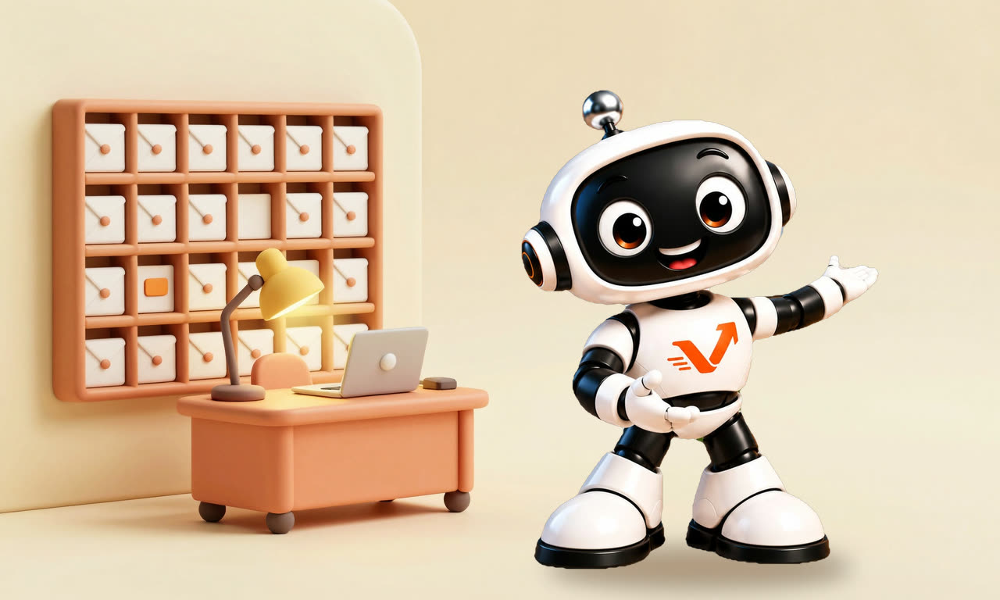

Belege und Buchhaltung
Belege erfassen, sortieren und fürs Treuhandbüro aufbereiten. Der häufigste Einstieg, weil er sich meist am schnellsten bezahlt macht.
AUTOMATIONEN
Die Arbeit, die sich jede Woche wiederholt, läuft von selbst. Automationen übernehmen, was in Ihrem Betrieb regelmässig Zeit kostet: Belege, Offerten, Korrespondenz, Anfragen. Eingerichtet bei Ihnen, zum Fixpreis nach der Erstanalyse.

IN 40 SEKUNDEN
Beleg kommt an, wird gelesen, abgelegt, gebucht, freigegeben. Was heute Hände braucht, läuft danach im Hintergrund. Der Kurzfilm zeigt es ohne Ton.

WAS SICH LOHNT
Es lohnt sich bei Arbeiten, die sich ständig wiederholen und heute noch von Hand gemacht werden.
Belege erfassen, sortieren und fürs Treuhandbüro aufbereiten. Der häufigste Einstieg, weil er sich meist am schnellsten bezahlt macht.
Wie weit die Automation geht, bestimmen Sie: vom Entwurf, den Sie nur noch prüfen, bis zur Antwort, die von selbst rausgeht.
Die Anfragen, die täglich kommen, beantwortet ein Assistent rund um die Uhr. Er erkennt, wann eine persönliche Beratung Sinn macht, und gibt dann an Sie weiter.
WAS ES KOSTET
Wie verzweigt ist der Ablauf, und wie lange brauchen wir für die Umsetzung? Die Einstufung machen wir in der Erstanalyse, danach steht der Fixpreis. Alle Preise pro Ablauf, einmalig, inklusive MWST.
Zelle antippen: darunter erscheinen Beispiel, Umfang und die Kosten im ersten Jahr.
Ein Programm · Tage
Ein Werkzeug, eine feste Regel. Läuft nach dem ersten Testlauf ohne Rückfragen.
Eingehende Mails mit Beleg erkennen und automatisch in den richtigen Ordner ablegen.
Fixpreis nach Erstanalyse
1 bis 2 Arbeitstage Umsetzung
| Weiteres Programm anbinden | ab CHF 1'900 |
| Betreuung klein, 1 Ablauf | CHF 130 pro Monat |
| Betreuung mittel, bis 5 Abläufe, 1 Std. Anpassung inkl. | CHF 290 pro Monat |
| Anpassung nach Aufwand | CHF 150 pro Stunde |
Chatbot und Telefonassistent sind eigene Produkte ausserhalb der Matrix, die Preise stehen in den häufigen Fragen. Betreuung kündbar auf Ende Folgemonat. Alle Preise in Schweizer Franken, inklusive 8,1 % Mehrwertsteuer.
SO LÄUFT ES AB
Wir schauen uns Ihre Abläufe an und benennen die Prozesse mit dem grössten Entlastungspotenzial, mit Offerte und ohne Verpflichtung.
Gemeinsam legen wir fest, was zuerst kommt. In der Regel das Einfachste mit dem schnellsten Nutzen, nicht das Grösste.
Wir beschreiben den Ablauf sauber, bevor gebaut wird: Auslöser, Schritte, Ergebnis, Ausnahmen und was passiert, wenn etwas ausfällt.
Wir richten die Automation bei Ihnen ein und zeigen Ihrem Team, wie sie läuft. Zwei Wochen läuft sie neben dem alten Weg mit, bis klar ist, dass sie trägt.
Wir prüfen regelmässig, ob die Automation noch passt, auf Wunsch dauerhaft mit unserer Begleitung, CHF 130 pro Monat, monatlich kündbar.
NÄCHSTER SCHRITT
Im Erstgespräch schauen wir gemeinsam auf Ihre Abläufe und sagen Ihnen, wo sich eine Automation lohnt und wo nicht. Kostenlos und unverbindlich.